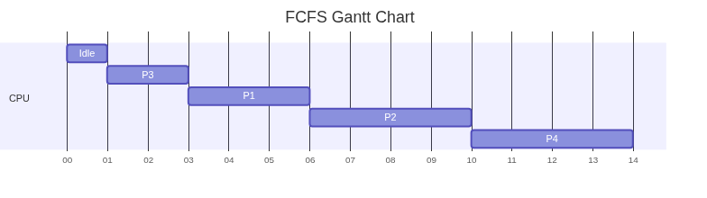
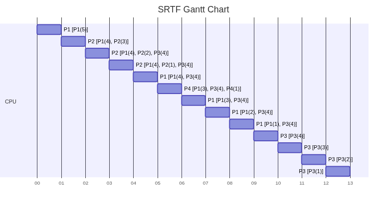

Operating Systems
Table of Contents
- 1. Introduction
- 2. I/O Structure
- 3. OS Operations
- 4. UNIX File Permissions
- 5. System Calls in Unix/Linux
- 6. System Programs
- 7. Operating System Structures
- 8. Process Management
1. Introduction
1.1. What is an OS
1.1.1. Resource Allocator
- Manages CPU, RAM, ROM (short for Electronically Erasable Programmable Read Only Memory), I/O Devices
- Decides how to allocate them to specific users and programs
1.1.2. Control Program
- Prevents error or improper use of the computer
1.2. Kernel
- When you define an operating system as the one program that keeps running all the time on the computer, and has control over everything, it’s called a kernel.
- An OS is the kernel, along with drivers and user interfaces.
1.3. Bootstrap
- It’s a program stored in ROM, and this is the first piece of software that runs on the system.
- It initializes the hardware, and then loads the OS kernel into the RAM.
1.4. Moore’s Law
- Number of transistors double every 18 months.
1.5. Interrupt
- An interrupt is a hardware or software signal that demands instant attention by an OS.
- Hardware interrupts are either done to let the OS know that it has completed some task (like printing), or it can request a service from the OS (like hitting a key on a keyboard should trigger some software action).
- Software interrupts are triggered by an operation called system/monitor call.
- Modern operating systems are interrupt-driven.
- Interrupt Service Routine (ISR) is a function that responds to an interrupt.
- An interrupt vector is a memory address that points to an ISR.
- Operating systems handle interrupts by looking up an interrupt vector table (a table full of interrupt vectors).
1.6. Bus
- It’s a communication system within the hardware of a computer, or between computers themselves.
1.6.1. Data Bus
- Carries data
- Bidirectional
1.6.2. Address Bus
- Carries addresses
1.6.3. Control Bus
- Carries control and timing signals from CPU to the rest of the hardware.
1.7. Storage Structure (From fastest to slowest)
1.7.1. Registers
- These are storage spaces present inside the CPU itself.
- A register stores one assembly level instruction.
- It’s either 32 bits or 64 bits (hence, 32 bit CPU or 64 bit CPU).
- This means that the amount of information that can be stored is \(2^{32}\).
1.7.2. Cache
- It’s a high-speed memory, which is just a buffer between CPU and RAM.
1.7.3. RAM
- Volatile Memory
1.7.4. ROM
- ROM is a small integrated circuit on the mother board, and all it contains are low level instructions for the device to boot.
- Hard Drive is a separate physical entity altogether.
1.7.5. Solid State Drive
- Flash memory is a type of non-volatile memory.
- EEPROM can be erased/reprogrammed one byte at a time, while flash memory does it one block at a time. (Eg. 32 KB sized blocks)
- Flash memory uses lower transistors per bit, and it’s more faster and efficient for large amounts of data.
- EEPROM would be better for small/frequent updates as only that specific byte needs to be changed.
There are two types of flash memory:
NAND Flash Memory Nor Flash Memory Blocks in series Blocks in parallel Better for more storage Not meant for more storage Faster for sequential reads Slower for sequential reads Slower random access FASTER random access - SSDs use NAND flash memory.
- All forms of ROM are called firmware, because it’s somewhere between hardware and software. The information stored in ROM is purely executable code.
1.7.6. Hard Disk Drive
- They use magnetic disks and mechanical read/write heads.
- Slower than SSDs, but HDDs are more safe in case of a data wipe-out.
- Used for archival storage, as they’re cheaper and safer.
1.7.7. Optical Discs and Tape
- Uses laser to read/write
- Slower and cheaper than HDD.
2. I/O Structure
2.1. Device Controller
- This is the physical interface between the computer’s I/O bus and the peripheral devices.
- They have their own special purpose registers, and their own amount of local buffer storage in RAM.
2.2. Device Driver
- It’s the software associated with device controller.
2.3. How they work together: Interrupt Driven I/O
- First, the device driver loads instructions into registers for the device controller.
- The device controller reads all instructions given inside these registers and performs them.
- Once it’s done (or the device has new data which will be communicated via an interrupt), the CPU runs a part of the device driver called the interrupt handler.
- This processes the event (data copied between RAM and device), after which the CPU will get back to what it was doing before this.
- Interrupt Driven I/O is what’s used in keyboards and mice because they deal with low-data volume.
- This isn’t very efficient for large amounts of data, because the CPU does the data copy only after an interrupt.
2.4. Direct Memory Access
- Inside the computer, there are 3 hardware components:
- CPU
- Device Controller
- DMA Controller
- The DMA controller is a small processor whose job is to copy data between RAM and the device.
- High speed I/O devices can transfer blocks of data directly to/from RAM, without involving CPU.
- The CPU gets an interrupt after a bunch of bytes, not after every byte.
3. OS Operations
3.1. Thread Concepts
- A program counter is a register in a computer’s CPU that holds the memory address of the next instruction to be executed.
- Memory is allocated to a process, and a process can have one or more threads.
3.1.1. Single-threaded process
- One program counter (executes one instruction at a time)
3.1.2. Multi-threaded process
- One program counter per thread (can do multiple things simultaneously)
3.2. I/O Subsystem
3.2.1. Buffering
- Temporarily storing data during transfer
3.2.2. Caching
- Storing parts of data in faster storage
3.2.3. Spooling
- Overlapping output of one job with input of another (like print queues)
3.3. Swap Memory
- When the computer runs out of RAM, inactive or less-used parts of programs like process data and kernel data.
4. UNIX File Permissions
- There are mainly 3 types of operations which you can allow for a file:
r: readw: writex: execute
- These operations should be granted or denied to 3 categories of users:
- Owner/User
- Group
- Others
- The permissions granted to a group is always 3 characters (in the exact order
of read, write, execute). If an operation is granted, the character is
present. If an operation is denied, you have a hyphen
-. - Eg. For any one of the above categories of users, if you grant read and write
access, and deny the ability to execute, it would look like
rw-. - For any file in UNIX, a 10 character string is used to represent file type and
permissions.
- The first character is for file type.
-is for regular file,dis for directory,sis for socket,bis for block device (disk partitions). - The rest of the 9 characters are the operations granted to each of the 3 categories of users.
- The first character is for file type.
For example, consider a file
a.out:-rwxr-xr-x
- rwx r-x r-x File Type Owner can read, Group Users Other Users write and can only can only execute read and read and execute execute The operations granted to each category can also be represented in binary:
rwx r-x r-x 111 101 101 Since 3 binary digits make 1 octal number (base 8), you can represent the entire 10 character string as an octal number:
rwx r-x r-x 7 5 5 So the octal number for
a.outwould be 0755 (octal numbers have to start from 0. If they don’t they’d be considered binary).
5. System Calls in Unix/Linux
5.1. What a System Call is
- When a process needs to do something only a kernel can do, it makes a system call to the OS, and transfers control to the kernel.
- It switches the mode bit from 1 (User mode) to 0 (kernel mode).
- System interrupt also switches mode bit from 1 to 0, but this is for, say, notifying CPU for I/O events.
- These usually written in C/C++ (or any other high level language).
5.2. How System Calls Work
- User program runs in user mode
- When it needs OS services, it makes a system call
- System call switches to kernel mode
- OS executes the request
- Returns to user mode
5.3. Fork
fork()is a system call in Unix/Linux used to create a new process, by duplicating the current process at whatever state of execution it’s in.This is what happens when you call fork:
Parent | | fork() | --------------------- | | Parent continues Child continues (pid > 0) (pid = 0)If you’re running a program, and there’s a
fork()happening, the current process (the parent) continues to execute, but there’s also a child process which resumes execution from that point.- Both the parent and the child process runs simultaneously, regardless of whether you have a multicore CPU or not. This also means that the order of execution is not guaranteed.
- The way we distinguish between the two processes is by using the return value
of
fork()(it returns the process id). - The process ID of a parent process could be any value greater than 0, but the process ID of the child process is always 0.
Consider the below example:
#include <stdio.h> #include <unistd.h> // This is needed for fork() void main() { int num, pid, square, half; num = 6; pid = fork(); // child is created // both of the processes resume execution from this line in the program if (pid == 0) { // child process square = num * num; printf("The square of the number is %d\n", square); } else { // parent process half = num / 2; printf("The half of the number is %d\n", half); } }
The half of the number is 3 The square of the number is 36
5.4. Open
open()is a system call that enables you to open a file.- It returns a file descriptor, which is a whole number used to represent an open I/O resource.
These are possible values a file descriptor:
FD Meaning 0 stdin (keyboard input) 1 stdout (terminal output) 2 stderr (error output) ≥ 3 user-opened files - So for files, the file descriptor is likely 3.
This is the basic syntax for
open():int fd = open("file.txt", x);
where x can be:
O_RDONLY: Only reads. The file must exist.O_WRONLY: Only writes. The file must exist.O_RDWR: Reads or writes. The file must exist.
If you need to create the file in case it doesn’t exist, you’d have to do:
int fd = open("file.txt", O_WRONLY | O_CREAT, 0644); // 0644 is permissions: rw-r--r--
- The third argument is called the mode, and that’s to grant permissions to the file once created.
open()returns-1in case of failure, or some non-negative number in case of success.
5.5. Read
This is the basic syntax for
read():int n = read(fd, buffer, sizeof(buffer)); // where the buffer is some array
This take the file associated with file descriptor
fd, and copies the contents into the arraybuffer.
5.6. Write
This is the basic syntax for
write():int n = write(fd, buffer, sizeof(buffer)); // where the buffer is some array
write()copies the contents of the arraybuffer, into wherever the file descriptorfdsays so.- The return value of
write()is the number of bytes actually written bywrite(). Here’s an example of printing characters to
stdout(fd = 1):#include <stdio.h> #include <string.h> #include <unistd.h> int main() { char msg[] = "Hello! This is a test.\n"; int len = strlen(msg); // = 23 int written = write(1, msg, len); printf("\n\n%d", written); // Output: 23% return 0; }
6. System Programs
- These are also called system utilities and these are all the programs which run in user mode.
- These are absolutely not related to system calls.
6.1. File Management
Commands to
- Create
- Delete
- Copy
- Rename files
6.2. Status Information
- Date, time, memory available, disk space
6.3. File Modification
- Text editors
6.4. Programming Support
- Compilers, assemblers, debuggers
6.5. Program Loading and Execution
6.5.1. Linker
- Linker is a system program that runs right after compilation.
- It traces all external references present in a program and connects them.
6.5.2. Loader
- Loader is another system program that runs during runtime.
- This is the thing that allocates memory and loads a program into memory for execution.
6.6. Communications
- Email, web browsers, remote login, file transfer
6.7. Background Services (daemons/services)
- Launch at boot
- Run continuously (disk checking, process scheduling, printing)
- Important: Run in user context, NOT kernel context
6.8. Application Programs
- User applications (not part of OS)
7. Operating System Structures
7.1. Simple/Monolithic Structure
- It consisted of
- Application Programs
- System Programs
- Device Drivers
- Note that these aren’t layers.
- Only one process can execute at a time.
- There are no user modes and no hardware protection. Any program can do anything to the system.
- Every new process overwrites the previous process upon completion.
- It’s called monolithic as there is no seperation between system programs and kernel.
7.2. Unix Approach
- Introduced User mode and kernel mode, which were essentially 2 layers of access.
- This is ever-so-slightly slower than a monolithic structure, but now the hardware is better protected.
- User mode was the layer on the top, which had all system programs.
- Kernel mode had everything else that would directly affect the hardware like I/O, CPU Scheduling or interrupt handling.
- The issue is that the kernel mode has too much of functionality.
7.3. Layered Approach
- The same idea as before, but now we have multiple layers.
- Every layer can only access functions from a layer below.
- Now every layer can make changes independent to other layers.
- Furthermore, this is more modular.
- The issue is that it’s harder to define the layers, and it’s visibly more slower than having two layers.
7.4. Microkernel Approach
- You keep the same Unix approach of having just 2 layers (user mode and kernel mode).
- This time, instead of defining system programs and pushing everything else to kernel, you do the opposite.
- You ensure that the kernel has minimal process and memory managment software, and everything else is in user mode.
- In the Unix approach, kernel mode used to be faster, but going from kernel to user mode is slow.
- Here in the microkernel approach, the user mode is fast because all functions are in the same layer, but moving to kernel mode is slower.
7.5. Module Approach
- Kernel operations are no longer in a single layer, but they are modules which are loaded as and when required.
- An example is Solaris (A unix based distribution that’s not linux).
7.6. Hybrid
macOS kernel |
\(=\) | Mach Kernel |
+ | BSD kernel |
| microkernel | monolithic | |||
Windows Kernel |
\(=\) | monolithic | + | microkernel |
Linux Kernel |
\(=\) | monolithic | + | moduled |
8. Process Management
- A process is a program in execution.
- A thread is the smallest unit of execution within a process.

8.1. Process Control Block
- Usually data is moved from RAM to CPU Registers, then execution happens, and then the output moves from CPU Registers to the required spot in RAM.
- If there’s an interrupt, the intermediary output can’t go to this required spot, hence this intermediary output along with the state of the process is stored in PCB (a place in RAM).
- If the process has to be resumed, the data from PCB is moved back into CPU registers.
8.2. Thread

- All the threads of a process have one common PCB, heap segment, data segment and code segment.
- A process is the changeable entity (it contains heap, stack, etc.) while a thread is the scheduleable entity (these deal with the actual sequence of instructions).
8.3. States of a Process
| State | Explanation |
|---|---|
new |
When process is launched, PCB is initialized, and is in new queue (present in the hard disk). |
ready |
Loaded in memory, and is in ready queue (waiting for CPU time). |
running |
When it has been allocated CPU time. No queue because one CPU thread can have only one process. |
waiting |
If in case of any system call, the process goes to waiting/blocked queue. After waiting state, a process will go to ready state, and not back to running state immediately |
terminated |
Process completed |
8.4. Timestamps of a Process
| Timestamp | Explanation | Formula |
|---|---|---|
| Arrival Time | new → ready for the first time |
|
| Completion Time | The timestamp when running → terminated |
|
| Turn Around Time | Duration of time from new → terminated |
\(\text{Completion Time} - \text{Arrival Time}\) |
| Burst Time | Time spent by process to execute completely in CPU | |
| Waiting Time | Total time spent in waiting state (waiting queue) |
\(\text{Turnaround Time} - \text{Burst Time}\) |
| Response Time | Time spent in waiting state till it first got CPU |
\(\text{Time at which it first got CPU} - \text{Arrival Time}\) |
8.5. Processes based on their limitation
The time taken by processes involve their burst time, and the time taken for the corresponding I/O operation.
8.5.1. I/O bound processes
- This is a collection of many processes with short burst time.
- This means there are a lot of I/O time because there are that many number of processes.
- The burst time is already less so reducing that won’t help in performance. What you can reduce, is the I/O time.
8.5.2. CPU bound processes
- This is a collection of a lesser number of processes with large burst time.
- Since the number of processes is less, the amount of I/O time is less and hence they don’t impact performance as much.
- What does impact performance is how you schedule the I/O operations and the operations which use CPU.
8.6. CPU Scheduling
- CPU Scheduler is a part of the kernel that schedules processes to be run on the CPU.
- Throughput is the number of processes completed per unit time.
8.6.1. Types of Schedulers based on Process Lifetime
| Job / Long-Term Scheduler | Medium-Term / Mid-Term Scheduler | Short-Term Scheduler |
|---|---|---|
| Admits processes from job pool (hard disk) to the ready queue | Swaps processes in and out of RAM | Admits processes from the ready queue to CPU |
| Controls the degree of multiprogramming (many processes using one single CPU) |
8.6.2. Types of Schedulers based on Preemption
| Cooperative | Preemptive |
|---|---|
| Runs processes one after the other, and every process is run without interruption | Runs processes but can interrupt with another process |
8.6.3. Scheduling Algorithms
- First Come First Serve
- Each job is run to completion (non-preemptive).
- The issue is that the convoy effect (a long process can delay all subsequent processes) can happen.
- Shortest Job First
- Shortest Job First selects the process with the smallest CPU burst time from the ready queue.
- This is also non-preemptive.
Process No Arrival Time Burst Time Completion Time TAT WT P1 1 3 6 5 2 P2 2 4 10 8 4 P3 1 2 3 2 0 P4 4 4 14 10 6 
- Shortest Remaining Time First
- Shortest Remaining Time First is the preemptive version of SJF.
- At every process arrival, the scheduler compares the remaining execution time of the currently running process with that of the newly arrived process.
Process No Arrival Time Burst Time Completion Time TAT WT RT P1 0 5 9 9 4 0 P2 1 3 4 3 0 0 P3 2 4 13 11 7 7 P4 4 1 5 1 0 0 In square brackets, we represent the ready queue.

- Round Robin